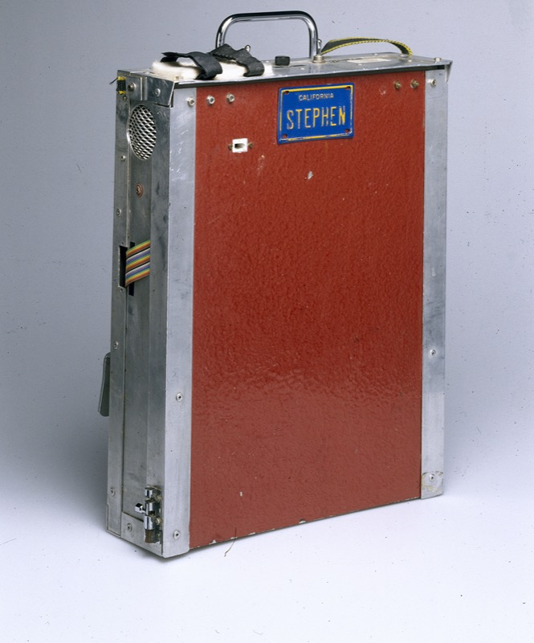

Speech Synthesis
Speech synthesis is the artificial production of human speech. A computer system used for this purpose is called a speech synthesizer, and can be implemented in software or hardware products. A text-to-speech (TTS) system converts normal language text into speech; other systems render symbolic linguistic representations like phonetic transcriptions into speech. [source]
Synthesized speech can be created by concatenating pieces of recorded speech that are stored in a database. Les systèmes diffèrent par la taille des unités de parole stockées ; un système qui stocke des phones ou des diphones offre la plus grande diversité de sortie, mais peut manquer de clarté. For specific usage domains, the storage of entire words or sentences allows for high-quality output. Alternatively, a synthesizer can incorporate a model of the vocal tract and other human voice characteristics to create a completely "synthetic" voice output.
The quality of a speech synthesizer is judged by its similarity to the human voice and by its ability to be understood clearly. An intelligible text-to-speech program allows people with visual impairments or reading disabilities to listen to written words on a home computer. The earliest computer operating system to have included a speech synthesizer was Unix in 1974, through the Unix speak utility. In 2000, Microsoft Sam was the default text-to-speech voice synthesizer used by the narrator accessibility feature, which shipped with all Windows 2000 operating systems, and subsequent Windows XP systems.
A text-to-speech system (or "engine") is composed of two parts: a front-end and a back-end. The front-end has two major tasks. First, it converts raw text containing symbols like numbers and abbreviations into the equivalent of written-out words. This process is often called text normalization, pre-processing, or tokenization. The front-end then assigns phonetic transcriptions to each word, and divides and marks the text into prosodic units, like phrases, clauses, and sentences. The process of assigning phonetic transcriptions to words is called text-to-phoneme or grapheme-to-phoneme conversion. Phonetic transcriptions and prosody information together make up the symbolic linguistic representation that is output by the front-end. The back-end—often referred to as the synthesizer—then converts the symbolic linguistic representation into sound. In certain systems, this part includes the computation of the target prosody (pitch contour, phoneme durations), which is then imposed on the output speech.
Speech synthesis is the artificial production of human speech.
History
Long before the invention of electronic signal processing, some people tried to build machines to emulate human speech. There were also legends of the existence of "Brazen Heads", such as those involving Pope Silvester II (d. 1003 AD), Albertus Magnus (1198–1280), and Roger Bacon (1214–1294). [more]
In 1779, the German-Danish scientist Christian Gottlieb Kratzenstein won the first prize in a competition announced by the Russian Imperial Academy of Sciences and Arts[1] for models he built of the human vocal tract that could produce the five long vowel sounds.

Photo: Science Museum London, CC BY-SA 2.0.
Open source speech synthesis systems
- eSpeak, which supports a broad range of languages
- Festival Speech Synthesis System, using diphone-based synthesis
- gnuspeech, using articulatory synthesis, from the Free Software Foundation
| Name | Creator(s) | First public release date | Latest stable version |
|---|---|---|---|
| eSpeak | Jonathan Duddington | 2006, February 10 | 2022, April 3 |
| FreeTTS | Paul Lamere, Philip Kwok, Dirk Schnelle-Walka, Willie Walker | 2001, December 14 | 2009, March 9 |
| Cepstral | Cepstral | 2000 | 2013 |
| CereProc | CereProc | 2006 | 2017, February |
Glossary
- Front-end
- The part of a text-to-speech system that converts raw text into phonetic transcriptions and marks it into prosodic units like phrases, clauses, and sentences.
- Back-end
- The part of a text-to-speech system, often called the synthesizer, that converts the symbolic linguistic representation produced by the front-end into sound.
Notes
References
- Wikipedia contributors. "Speech synthesis." Wikipedia, The Free Encyclopedia. CC BY-SA 4.0.
- Wikipedia contributors. "Comparison of speech synthesizers." Wikipedia, The Free Encyclopedia. CC BY-SA 4.0.
- Wikipedia contributors. "Brazen head." Wikipedia, The Free Encyclopedia. CC BY-SA 4.0.
- Science Museum London / Science and Society Picture Library. "Computer and speech synthesiser housing, 19." Wikimedia Commons. CC BY-SA 2.0.